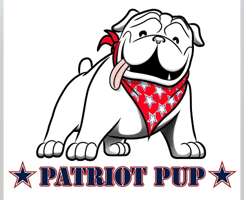
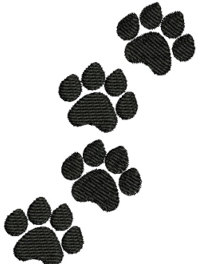

Some folks have asked how PATRIOT PUP came to life and why I have started on this life adventure to share him with each of you!
If you have a moment, I'd be humbled to share my stroy, please read on...
I was blessed to have grown up in Hinton, Wast Virginia. A small coal mining / railroad community surrounded by some of the hardest working, griving and loving folks I know. To this day, I love going home and seeing familirar faces, sharing stories of days gone by and meeting the newest faces of future generations.
My parents had a medical practive in town. Daddy was the town doctor and Mom served alongside him at his office as a nurse. I was the youngest of three children.
When I was a freshman at Queens University in Charlotte, North Carolina my brother, Untied States Marine Sgt. Mecot Camara, was killed in Beirut by a suicide bomber that drove a van loaded with explosives into the Marines Barracks killing 241.
Mecot's story, titled AMERICAN BROTHER, and the story of the Beirut Bombing was my first attempt at writing. I wanted to make sure him and his brothers, those that died and those that survived, were never forgotten.
This laid the foundation for PATRIOT PUP. Mecot loved children. He loved our country and sacrificed his life defending our interests our freedom.
And I felt a strong need that our children learn more about patriotism, what it means and how important it is for our future.
So, PATRIOT PUP (book series) was created with three characters that will always carry the storylines. First, MECOT being portrayed as a US Marine Drill Instructor. I do believe had he lived he definitely would have pursued this role in his military career. And, by having him as a mian character in this book, I know his legacy will continue and his spirit will keep on living.
Second, HANK, my youngest son, is being portrayed as Mecot's nephew. His character, which is true to life, shoes he's always inquisitive, full of adventure and slightly mischievous.
Lastly, and most importantly, is the character of PATRIOT PUP. He is a friendly, mischievous puppy that teaches bravery, loyalty and, most especially, patriotism to our children.
So, the BIG NEWS, we are branding PATRIOT PUP! Check out the new logo below! Thank you Jason Briedenbach, your talent and creativity are much appreciated!!!

And PATRIOT PUP, VOLUME II, BASEBALLS & HOT DOGS! will be released this December!!!
It's a super cute story line, the illustrations are AMAZING and it teaches children about what to do when the Star Spangled Banner is played at events.
And MORE BIG NEWS, we have a great website that is updated regularly with the latest pictures of you and your travels with PATRIOT PUP. And, drum roll please ~ we have a really cute online store with all kinds of PATRIOT PUP goodies.
Most especially, the ADORABLE PATRIOT PUP PLUSH!!!
Check out PatriotPup.us
And if you see something you like, please place an order. Thank you Jon Manock and Brittani Fernandez for your talent, commitment, enthusiasm! You made my tears go away in my desperation to find a web designer.
If it's easier for you to shop on Amazon, AMERICAN BROTHER, PATRIOT PUP, VLOUME I, and the adorable PATRIOT PUP plush are online directly linked to Amazon too!
Please know that a portion of book sales will go directly to Just Our Soldiers' Helpers. They are a non-profit organization that sends amazing care packages to our deployed troops.
It is my dream, and if you know my, you know I dream big, to create a PATRIOT PUP Movement! Our country could benefit from a little bit of PATRIOT PUP lover right now by not only inspiring patriotism in our children but in each one of us too! I would love PATRIOT PUP to become our American National Mascot!!
Does anyone have any connections to The White House or Good Morning America?!?
Lastly, this project was created and will continue, Lord willing, based on the love of a little sister to make sure that all those that have fought for our freedom and defended our nation will newver be forgotten, most especially, her big broghter, Mecot.
So.. if you would be so kind as to SHARE, LIKE, BOOKE ME AT YOUR CHILD'S SCHOOL FOR STORYTIME, ANY OTHER EVENTS or WRITE A REVIEW ON AMAZON, I'd be most humbled and thankful.
Together, with PATRIOT PUP, we can make a difference in educating our children about patriotism.
From the bottom of my heart ~ thank you for putting up with my PATRIOT PUP love affair and dream. Most especially, thank you Jeff Hughey, Joe, Sam, Hank. I love you to the moon and back!
IT'S TIME FOR OUR COUNTRY TO COME TOGETHER AND, JUST MAYBE, A LITTLE PUPPY BY THE NAME OF PATRIOT PUP CAN MAKE A DIFFERENCE!
PatriotPup.us Facebook.com/PatriotPup Instagram.com/Patriot_pup AmericanBrother.us Facebook.com/AmericanBrother Instagram.com/amerbrotherbook
OR email me at: PatriotPup.us@gmail.com
I would rather try something great & fail than try nothing at all & and have regret.
Forward March!
